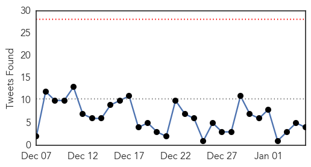
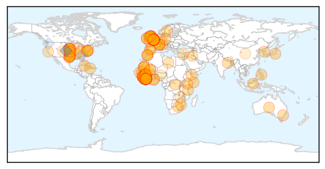
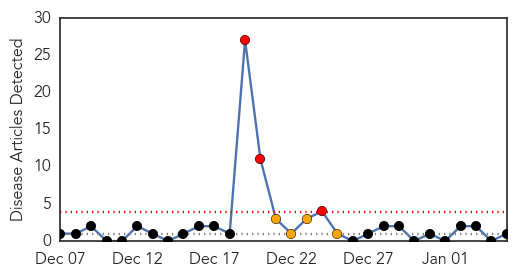
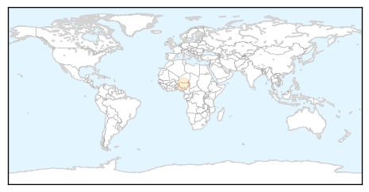

Ebola
30-Day Web Trend
0 alerts, 0 warnings

30-Day Twitter Trend
0 alerts, 0 warnings

Article Locations
Article Confidences

Top Articles:
- 1.000
- U.S. aid worker exposed to Ebola arrives in Nebraska
- 1.000
- Ebola Lecture Aims To Dispel Myths Surrounding The Virus
- 1.000
- British nurse in critical condition with Ebola
- 1.000
- Stricken British nurse to be injected with Ebola survivor's blood as infection cases top 8,000
- 1.000
- US Medical Worker Exposed to Ebola Overseas Arrives in Omaha
- 1.000
- US medical worker exposed to Ebola overseas arrives in Omaha
- 1.000
- Ebola outbreak: Liberia to reopen schools as spread of disease decreases
- 1.000
- UK Ebola nurse Pauline Cafferkey's condition has 'stabilised' but still critical, Jeremy Hunt says
- 1.000
- US health worker exposed to Ebola reaches Omaha
- 1.000
- Ebola deaths top 8,000; exposures trigger health worker evacuations
- 1.000
- Experts say 2014 a busy year for public health workers
- 1.000
- Charity reviews Ebola safety procedures, UK nurse in ‘critical condition’ — RT UK
- 1.000
- 20,000 cases on, Ebola mysteries remain
- 0.999
- US Health Care Worker Exposed To Ebola In Sierra Leone Arrives In Nebraska
- 0.999
- Latest Ebola News: US medical worker exposed to Ebola overseas - Officials
- 0.999
- Ebola crisis: Health authorities set up screening facilities at Papua New Guinea airport
- 0.999
- British nurse with Ebola critical but stable
- 0.999
- Ebola-Infected UK Nurse Fighting for Her Life — Naharnet
- 0.999
- Ebola Infected UK Nurse Fighting For Her Life
- 0.999
- Health Worker Exposed to Ebola in Sierra Leone Reaches U.S. for Observation
- 0.999
- Ebola-infected UK nurse fighting for her life
- 0.999
- Edmonton Aid Worker To Battle Psychological Toll Of Virus
- 0.999
- Ebola outbreak death toll passes 8,000
- 0.999
- 2-year-old boy playing in bat-infested tree 'ground zero' patient for Ebola epidemic
- 0.999
- Ebola-infected UK nurse fighting for her life
- 0.998
- Ebola screening: U.S. takes Mali off list
- 0.998
- Travelers from Mali no longer need to go through enhanced Ebola screenings
- 0.998
- The UN Must Investigate Ebola Outbreak in West Africa
- 0.998
- Health worker exposed to Ebola in Sierra Leone reaches U.S. for observation
- 0.998
- There is no Ebola case in Haiti, says acting PM
- 0.998
- Ebola survivors share stories via mobile app - Emirates 24
- 0.998
- American exposed to Ebola arrives at Nebraska facility for monitoring
- 0.998
- First Ebola patient diagnosed in Britain in critical condition
- 0.997
- Ebola: charity to investigate how British nurse caught the virus
- 0.997
- British nurse with Ebola fights for her life
- 0.997
- Anesthesiologists Face the Ebola Epidemic—Time to 'Educate, Train and Prepare'
- 0.997
- IU profs left Liberia as Ebola was 'about to explode'
- 0.997
- With no new Ebola cases, CDC lifts travel restrictions in Mali
- 0.996
- Somalia denies registering first Ebola case
- 0.996
- Pregnant Ebola survivor stumps doctors
- 0.996
- App to help fight Ebola stigma - Africa
- 0.996
- British Ebola nurse 'stabilised'
- 0.995
- Health Workers Returning From West Africa Will Not Be Quarantined
- 0.995
- Minister: British Ebola nurse ‘stabilised’ – BorneoPost Online
- 0.995
- US Ends Ebola Screenings for Travelers from Mali
- 0.995
- British Ebola nurse stabilized: minister
- 0.995
- LIBERIA: Oxfam Ebola Response Makes Impact. 35,000 residents benefit in Montserrado
- 0.995
- Save the Children 'urgently reviewing' how Ebola staff use protective suits
- 0.994
- Liberia plans to reopen schools in February as Ebola spread ebbs
- 0.994
- Britain says it has strengthened Ebola screening after first case
Showing top 50 articles...
Top Tweets:
- 0.867
- RT: Sierra Leone MOH Ebola Update Jan 3 & 4: 67 New Conf. Cases & 25 Susp.; 49 New Conf. Deaths https://t.co/ZrVmY05HWo
- 0.814
- RT: WHO Ebola update, January 5: 20,656 cases, 8,153 deaths http://t.co/nPPlpjDvbN
- 0.804
- CDC comms expert Nicole developed & disseminated Ebola-prevention messages in Sierra Leone. Read her story: http://t.co/f3dj0NCNUn.
- 0.740
- U.S. health worker exposed to Ebola in Sierra Leone arrives in Nebraska http://t.co/ovwtDRRSCL TackleEbola
- 0.684
- RT: In one Liberian village, the Ebola outbreak did not spare a single mother http://t.co/FZxfEEXy3n
- 0.662
- RT: US medical worker exposed to Ebola in West Africa is under observation at Nebraska hospital: http://t.co/ldDrvqXP33
- 0.662
- RT: Ebola deaths top 8,000 in worst-hit West Africa: WHO http://t.co/L83yMBfXnR
- 0.626
- RT: In case you missed it, read a piece by on the stress of reporting on Ebola while living in Sierra Leone http://…
- 0.613
- AfricaStopEbola A partager massivement ! Les artistes s'engagent avec MSF pour lutter contre l'épidémie Ebola. http://t.co/wb2eDEVinw
- 0.589
- RT: Latest reported Ebola case graphs from CDC http://t.co/bZW3RtqK4R
- 0.548
- Ebola in graphics: The toll of a tragedy http://t.co/u9wbg5l9A6 via Ebola ebolaoutbreak http://t.co/Mi61V4o97W
- 0.531
- AFD blog `Merck Resumes Ebola Vaccine Clinical Trials At A Lower Dose' http://t.co/aZll9LI3js
Meningitis
30-Day Web Trend
3 alerts, 4 warnings

30-Day Twitter Trend
0 alerts, 0 warnings

Article Locations
Article Confidences

Top Articles:
Top Tweets:
-
No tweets found for Jan 05, 2015